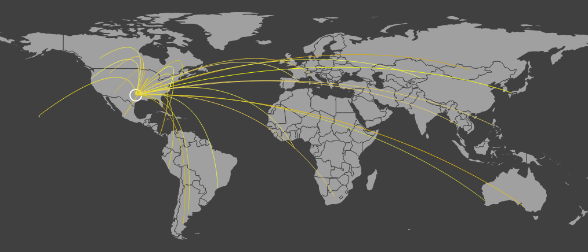

I'm a computer scientist pursuing my PhD at Georgia Tech. I'm also actively involved in open source development.
My current research interests include:
Software security, especially low level binary analysis and exploit automation. Programming languages, specifically theorem provers, compilers and program synthesis. Finally, the intersection of these fields within secure programming languages.
My blog may also give you an idea of what I'm interested in.
A well documented and well tested python2/3 compatible library designed to communicate with a minecraft server as a client.
Was used as a method for stress testing servers by connecting hundreds of bots.
A script that generates a cool looking map of traffic inflow to your servers by scraping logs containing IP addresses.
Used in some company's "war room" TVs to actively monitor the locations of current player connections.
A github action that builds documentation powered by Sphinx and handily presents errors in-line for Github pull requests.
The default and widely used implementation of the Python programing language. Contributions have ranged from worflow to adding fuzz testing for security. Currently a triager, reviewing bugs and pull requests when they come in to lighten the burden on core developers.
A very popular python package used to grab system level details such as processor utilization. Contributed a patch to simulate a POSIX-like load average calculation for Windows.
Google's fuzzing platform for open-source project. Contributed and finished integration for Python, initially including the json, csv and regex modules.
My first foray into open source software came from the Minecraft server mods Bukkit and Spigot. My contributions were namely in the form of performance improvements, the most significant of which was off-loading chunk I/O from the main thread. This was all done inside a reverse engineered Java codebase.